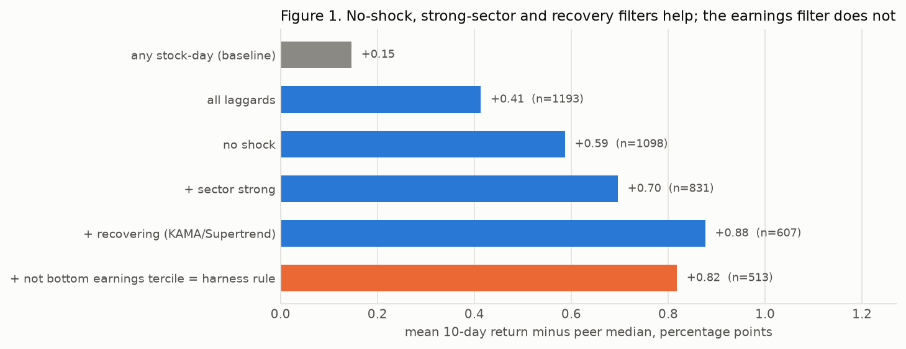

Report 1 — Technical Reversal Events on 30 BIST 100 Stocks
Educational research output for CSE-481. Historical evidence only: not a forecast, not investment advice. Returns are nominal TRY.
Generated by python -m src.reports.build_reports --only 1 from committed outputs (no analysis is re-run).
| file |
modified |
sha256 |
reports/technical_events.parquet |
2026-11-09 19:35:32 |
8f94db7524b6 |
reports/event_summary_fwd.csv |
2026-11-09 19:35:32 |
5c356e6e96c8 |
reports/event_summary_exc.csv |
2026-11-09 19:35:32 |
1af997447063 |
reports/event_summary_regime.csv |
2026-11-09 19:35:32 |
cb8dfa12bbd4 |
1. Research question
Project spec §8 and §13: treat each technical signal as a timestamped event, record the market state at that
time and measure what happened over the next 1, 3, 5 and 10 trading days. The question is not "does the indicator
work" but: after this event, did the stock move in the expected direction more often or by more than it would
have anyway, and does the answer survive regimes, a later sample and multiple-testing correction?
Short answer. After all 12 event types, the stock did move in the "expected" direction in raw terms, but
almost exactly as much as any random stock-day would have, because BIST 100 rose strongly in nominal TRY over
the sample. Measured against XU100, the average 5-day effect is between −0.13% and +0.32%, no event type
survives multiple-testing correction, and only 4 of 12 keep the same sign in the second half of the sample.
Two bullish events (kama_turn_up, resistance_break) are the most stable, but their edge (~+0.2–0.3% in 5 days)
is about the size of one round-trip trading cost (0.30% in our backtest).
2. Data and method
- Universe: the fixed 30-stock study universe (
config/universe.csv), daily İş Yatırım prices,
2021-11-16 – 2026-11-06.
- Events are detected using only today's and earlier data (
src/events/technical_events.py: detect_events).
If the same event repeats within 5 trading days for a stock, only the first is kept.
- Direction-adjusted return: for a bullish event the forward return, for a bearish event minus the forward
return. Positive always means "moved the way the event suggested".
- Raw = stock's own forward return. Excess = stock return minus XU100 return over the same horizon.
- Any-day baseline: forward return from every stock-day (no event), the "knowing nothing" benchmark.
- The Kahramanmaraş earthquake window (events whose 10-day horizon touches 6–24 Feb 2023, 244 events) is
excluded; Borsa İstanbul was closed 8–14 Feb 2023 and prices were not comparable.
- Regimes: the stock above/below its own 200-day SMA; XU100 above/below its 200-day SMA; XU100 20-day volatility
above/below its expanding median (needs 250 days, earlier rows are "unknown" and left out of those columns).
- Statistics: t-test of the mean; because many stocks fire on the same day, a day-clustered t (mean per day
first) is reported and used for p-values; Benjamini–Hochberg q across the 12 event types.
Table 1. Event definitions
| event |
family |
dir |
definition |
| bb_lower_reentry |
Bollinger |
bull |
close was below the lower band (20, 2σ) yesterday and is back inside today |
| bb_upper_reentry |
Bollinger |
bear |
close was above the upper band yesterday and is back inside today |
| rsi_oversold_exit |
RSI |
bull |
RSI(14) crosses back above 30 (exit from oversold; local-trough proxy) |
| rsi_overbought_exit |
RSI |
bear |
RSI(14) crosses back below 70 (exit from overbought; local-peak proxy) |
| supertrend_up |
Supertrend |
bull |
Supertrend(10, 3×ATR) direction flips to up |
| supertrend_down |
Supertrend |
bear |
Supertrend direction flips to down |
| kama_turn_up |
KAMA |
bull |
KAMA(10, 2, 30) slope turns from ≤0 to >0 |
| kama_turn_down |
KAMA |
bear |
KAMA slope turns from ≥0 to <0 |
| cloud_break_up |
Ichimoku |
bull |
price moves from inside/below the cloud (9, 26, 52) to above it |
| cloud_break_down |
Ichimoku |
bear |
price moves from inside/above the cloud to below it |
| resistance_break |
Support/Resistance |
bull |
close crosses above yesterday's nearest pivot resistance |
| support_break |
Support/Resistance |
bear |
close crosses below yesterday's nearest pivot support |
3. Main result: event follow-through at 5 days
Any-day baseline (all stock-days, no event): 5-day mean +1.08%, positive in
55.1% of cases (1d +0.22%, 10d +2.11%).
Table 2. Direction-adjusted 5-day returns (%), earthquake window excluded
| event |
dir |
n |
raw 5d % |
raw hit % |
excess 5d % |
excess hit % |
t |
t (by day) |
p (by day) |
days |
q BH |
raw vs any-day |
| bb_lower_reentry |
bull |
632 |
0.95 |
54.91 |
0.08 |
46.99 |
0.43 |
-0.35 |
0.726 |
266 |
0.958 |
-0.13 |
| bb_upper_reentry |
bear |
1,187 |
-0.90 |
44.65 |
-0.13 |
52.65 |
-0.79 |
-1.01 |
0.311 |
580 |
0.747 |
0.17 |
| cloud_break_up |
bull |
718 |
1.06 |
54.87 |
0.01 |
44.99 |
0.08 |
0.34 |
0.737 |
428 |
0.958 |
-0.02 |
| cloud_break_down |
bear |
633 |
-0.49 |
48.50 |
0.25 |
56.40 |
1.40 |
2.04 |
0.042 |
372 |
0.508 |
0.59 |
| kama_turn_up |
bull |
1,948 |
1.25 |
54.11 |
0.26 |
46.15 |
2.30 |
1.18 |
0.237 |
731 |
0.711 |
0.17 |
| kama_turn_down |
bear |
1,923 |
-0.38 |
48.67 |
-0.07 |
50.91 |
-0.61 |
-0.45 |
0.649 |
724 |
0.958 |
0.70 |
| rsi_oversold_exit |
bull |
218 |
0.99 |
55.05 |
0.32 |
46.79 |
1.02 |
0.27 |
0.791 |
130 |
0.958 |
-0.09 |
| rsi_overbought_exit |
bear |
786 |
-0.75 |
44.53 |
-0.05 |
52.54 |
-0.27 |
0.12 |
0.905 |
415 |
0.960 |
0.33 |
| supertrend_up |
bull |
521 |
1.26 |
56.43 |
0.07 |
45.49 |
0.29 |
0.05 |
0.960 |
324 |
0.960 |
0.18 |
| supertrend_down |
bear |
539 |
-1.27 |
41.56 |
-0.03 |
52.88 |
-0.15 |
0.26 |
0.798 |
254 |
0.958 |
-0.19 |
| resistance_break |
bull |
3,104 |
1.24 |
55.70 |
0.23 |
48.13 |
2.53 |
1.40 |
0.162 |
938 |
0.648 |
0.16 |
| support_break |
bear |
2,849 |
-0.74 |
45.88 |
-0.08 |
51.46 |
-0.89 |
1.50 |
0.135 |
855 |
0.648 |
0.34 |
"raw vs any-day" = raw mean minus what the baseline drift alone gives in that direction
(+1.08% for bullish, −1.08% for bearish events).
Events with q < 0.05 on excess return (day-clustered): none.

Reading Table 2 and Figure 1.
- Bullish events show a raw 5-day gain of +0.95% to +1.26% and a positive outcome in 54–56% of cases. The
any-day baseline is +1.08% and 55.1%. So the raw "success" is mostly market drift, not the signal.
- Bearish events look like failures in raw terms (raw hit 42–49%): stocks kept rising after a "sell" signal
simply because the whole market was rising.
- Once XU100 is subtracted (orange bars), every event type is within ±0.35%. The lowest day-clustered p-value
(
cloud_break_down, p = 0.042) becomes q = 0.51 after correction for 12 tests.
- Clustering matters:
kama_turn_up and resistance_break have event-level t = 2.30 and 2.53, but many of these
events happen on the same days across stocks. Averaging per day first cuts t to 1.18 and 1.40. The plain t-test
overstates confidence.
4. Bounce / failure counts and reversal strength
A bounce is a positive direction-adjusted raw 5-day return, a failure is zero or negative.
Reversal strength is the median direction-adjusted return (medians resist a few extreme days).
Table 3. Bounce and failure counts
| event |
n |
bounce (5d) |
failure (5d) |
median strength 5d % |
median strength 10d % |
median excess 5d % |
excess failure % |
| bb_lower_reentry |
632 |
347 |
279 |
0.85 |
0.99 |
-0.33 |
52.1 |
| bb_upper_reentry |
1,187 |
530 |
657 |
-0.86 |
-1.60 |
0.33 |
47.3 |
| cloud_break_up |
718 |
394 |
322 |
0.82 |
0.87 |
-0.50 |
54.7 |
| cloud_break_down |
633 |
307 |
325 |
-0.21 |
-0.50 |
0.60 |
43.4 |
| kama_turn_up |
1,948 |
1,054 |
873 |
0.71 |
1.12 |
-0.30 |
52.8 |
| kama_turn_down |
1,923 |
936 |
982 |
-0.14 |
-1.04 |
0.11 |
48.8 |
| rsi_oversold_exit |
218 |
120 |
89 |
1.12 |
0.58 |
-0.08 |
49.1 |
| rsi_overbought_exit |
786 |
350 |
436 |
-0.89 |
-1.75 |
0.51 |
47.5 |
| supertrend_up |
521 |
294 |
220 |
0.92 |
0.85 |
-0.56 |
53.2 |
| supertrend_down |
539 |
224 |
315 |
-1.34 |
-1.42 |
0.33 |
47.1 |
| resistance_break |
3,104 |
1,729 |
1,356 |
0.88 |
1.28 |
-0.17 |
51.3 |
| support_break |
2,849 |
1,307 |
1,539 |
-0.52 |
-0.86 |
0.15 |
48.4 |
Bounce counts look good; the typical event does not. Lower-band re-entries bounced 347 times and failed
279 times, which reads like a usable reversal signal. But the median excess return of every bullish event is
negative (−0.08% to −0.56%) while the mean is slightly positive. The typical bullish event slightly
underperformed XU100, and a minority of large winners pulled the average up. A rule that trades every event
collects mostly the typical case.
5. Horizons
Table 4. Mean direction-adjusted excess return vs XU100 by horizon (%)
| event |
excess 1d % |
excess 3d % |
excess 5d % |
excess 10d % |
| bb_lower_reentry |
-0.13 |
-0.03 |
0.08 |
0.12 |
| bb_upper_reentry |
0.11 |
-0.03 |
-0.13 |
-0.58 |
| cloud_break_up |
0.03 |
0.11 |
0.01 |
0.18 |
| cloud_break_down |
0.01 |
0.10 |
0.25 |
0.38 |
| kama_turn_up |
0.09 |
0.18 |
0.26 |
0.33 |
| kama_turn_down |
0.07 |
-0.15 |
-0.07 |
-0.23 |
| rsi_oversold_exit |
-0.17 |
0.20 |
0.32 |
0.50 |
| rsi_overbought_exit |
0.11 |
-0.10 |
-0.05 |
-0.51 |
| supertrend_up |
0.16 |
0.07 |
0.07 |
0.19 |
| supertrend_down |
0.03 |
0.03 |
-0.03 |
0.05 |
| resistance_break |
0.13 |
0.16 |
0.23 |
0.37 |
| support_break |
0.06 |
-0.01 |
-0.08 |
-0.25 |
Effects grow slowly with the horizon for the two stable bullish events (kama_turn_up +0.09% → +0.33%,
resistance_break +0.13% → +0.37% from 1 to 10 days), which looks more like mild trend continuation than a
sharp reversal. Bearish band/RSI exits (bb_upper_reentry, rsi_overbought_exit) get worse at 10 days
(−0.58%, −0.51%): after an overbought exit, the stock tended to keep outperforming the index. That is momentum,
the opposite of the reversal the event name suggests.
6. Regimes
Table 5. Mean 5-day excess return (%) and event count by regime
| event |
stock>SMA200 |
stock≤SMA200 |
XU100 up |
XU100 down |
high vol |
low vol |
| bb_lower_reentry |
-0.22 (294) |
+0.32 (265) |
+0.02 (396) |
+0.08 (163) |
+0.72 (193) |
-0.22 (356) |
| bb_upper_reentry |
-0.22 (916) |
-0.13 (95) |
-0.19 (938) |
-0.54 (73) |
-0.25 (290) |
-0.20 (601) |
| cloud_break_up |
+0.01 (531) |
+0.08 (106) |
-0.05 (540) |
+0.41 (97) |
+0.23 (237) |
-0.13 (367) |
| cloud_break_down |
+0.54 (361) |
-0.45 (210) |
+0.39 (420) |
-0.43 (151) |
+0.27 (200) |
+0.01 (362) |
| kama_turn_up |
+0.22 (1224) |
+0.35 (448) |
+0.22 (1386) |
+0.43 (286) |
+0.14 (647) |
+0.30 (926) |
| kama_turn_down |
-0.03 (1203) |
-0.45 (440) |
-0.11 (1342) |
-0.28 (301) |
-0.05 (549) |
-0.22 (1004) |
| rsi_oversold_exit |
+0.07 (42) |
+0.21 (147) |
+0.27 (118) |
-0.01 (71) |
+1.02 (79) |
-0.28 (109) |
| rsi_overbought_exit |
-0.21 (625) |
+1.51 (25) |
-0.15 (616) |
-0.11 (34) |
-0.51 (184) |
+0.15 (370) |
| supertrend_up |
-0.08 (329) |
+0.34 (107) |
+0.06 (376) |
-0.29 (60) |
-0.04 (191) |
+0.04 (226) |
| supertrend_down |
+0.14 (321) |
-0.44 (130) |
+0.39 (346) |
-1.40 (105) |
-0.12 (165) |
-0.10 (267) |
| resistance_break |
+0.19 (2012) |
+0.38 (707) |
+0.24 (2247) |
+0.22 (472) |
+0.30 (972) |
+0.20 (1583) |
| support_break |
-0.08 (1701) |
-0.23 (834) |
-0.11 (1988) |
-0.21 (547) |
-0.08 (790) |
-0.14 (1637) |

Regimes change the answer, which is a warning, not a discovery.
- Mean-reversion events work better in high volatility:
bb_lower_reentry +0.72% (n = 193) and
rsi_oversold_exit +1.02% (n = 79), against −0.22% and −0.28% in low volatility. This matches the spec's
ASELS illustration, but the samples are small and these cells are not corrected for the ~70 regime tests.
- Bearish trend signals fail when the index is already falling:
supertrend_down −1.40% (n = 105) in XU100-down
periods. After a sell flip in a falling market, the stock fell less than the index.
- Cells with n < 50 (for example
rsi_overbought_exit below its SMA200, +1.51% with n = 25) should be read as
noise.
7. Combined condition: volume confirmation
The spec's ASELS example asks whether events with confirming conditions behave differently than single-indicator
events. The stored events carry one confirmation flag: 20-day volume z-score > 1 on the event day.
Table 6. Excess 5-day return with and without volume confirmation (%)
| event |
n (normal vol) |
excess 5d % (normal) |
n (volume z>1) |
excess 5d % (volume z>1) |
difference |
| bb_lower_reentry |
518 |
0.10 |
114 |
0.01 |
-0.09 |
| bb_upper_reentry |
967 |
-0.14 |
220 |
-0.08 |
0.06 |
| cloud_break_up |
455 |
-0.04 |
263 |
0.11 |
0.16 |
| cloud_break_down |
518 |
0.16 |
115 |
0.66 |
0.50 |
| kama_turn_up |
1,422 |
0.23 |
526 |
0.35 |
0.12 |
| kama_turn_down |
1,644 |
-0.08 |
279 |
0.00 |
0.08 |
| rsi_oversold_exit |
155 |
0.29 |
63 |
0.41 |
0.12 |
| rsi_overbought_exit |
656 |
0.01 |
130 |
-0.38 |
-0.39 |
| supertrend_up |
235 |
0.03 |
286 |
0.10 |
0.07 |
| supertrend_down |
430 |
0.03 |
109 |
-0.27 |
-0.30 |
| resistance_break |
2,179 |
0.15 |
925 |
0.41 |
0.26 |
| support_break |
2,432 |
-0.12 |
417 |
0.12 |
0.24 |
Volume confirmation helps the breakout-type events a little: resistance_break +0.15% → +0.41%,
cloud_break_down +0.16% → +0.66%, kama_turn_up +0.23% → +0.35%. It hurts the bearish exhaustion events
(rsi_overbought_exit +0.01% → −0.38%, supertrend_down +0.03% → −0.27%). In other words, high volume tends to
mean "the move continues". These differences were not tested for significance and are a hypothesis for later
work, not a rule.
8. Out-of-sample check: first half vs second half
The sample is split at 2024-05-12. A pattern worth trusting should keep at least its sign.
Table 7. Mean 5-day excess return (%) in each half
| event |
n first half |
excess 5d % first |
n second half |
excess 5d % second |
same sign |
| bb_lower_reentry |
231 |
-0.20 |
401 |
0.25 |
no |
| bb_upper_reentry |
686 |
-0.05 |
501 |
-0.24 |
yes |
| cloud_break_up |
313 |
-0.15 |
405 |
0.14 |
no |
| cloud_break_down |
208 |
1.19 |
425 |
-0.21 |
no |
| kama_turn_up |
893 |
0.21 |
1,055 |
0.30 |
yes |
| kama_turn_down |
881 |
0.07 |
1,042 |
-0.18 |
no |
| rsi_oversold_exit |
72 |
0.56 |
146 |
0.20 |
yes |
| rsi_overbought_exit |
505 |
-0.19 |
281 |
0.19 |
no |
| supertrend_up |
248 |
0.15 |
273 |
-0.01 |
no |
| supertrend_down |
245 |
0.57 |
294 |
-0.53 |
no |
| resistance_break |
1,379 |
0.27 |
1,725 |
0.19 |
yes |
| support_break |
1,127 |
0.16 |
1,722 |
-0.24 |
no |
Same sign in both halves: 4 of 12 event types.
Only kama_turn_up, resistance_break, rsi_oversold_exit and bb_upper_reentry keep their sign in both
halves. The largest first-half effect (cloud_break_down +1.19%) turns into −0.21%. The two halves are very
different markets (see Türkiye context): the first is the negative-real-rate boom, the second is the tight-policy
period with two political/financial shocks. A sign flip across them is what we would expect from a pattern that
is regime-specific or accidental.
9. Multiple testing
This report alone looks at 12 event types × 4 horizons × 2 return definitions
(raw, excess) plus 6 regime cuts, more than 100 numbers. At a 5% level, about 1 in 20 would look
"significant" by chance. That is why Table 2 uses day-clustered p-values and Benjamini–Hochberg q, and why a
result is only called a finding when it also keeps its sign out of sample (Table 7).
Read as a whole, the evidence is "no reliable reversal edge beyond the market". If we had picked the best
cell in the regime table (+1.51%) and reported it alone, it would look like a strong finding. That is exactly the
data-snooping risk the project brief warns about.
10. Türkiye context
The sample (Nov 2021 – Nov 2026) covers very different Turkish market regimes. These dates explain much of the
drift and the regime and half-sample differences above:
- Dec 2021 – 2022: currency crisis and negative real rates. The lira crisis of December 2021 and the
FX-protected deposit scheme were followed by a year of high inflation (CPI peaked above 80% in late 2022) with a
low policy rate. Equities became an inflation hedge and XU100 rose very strongly in nominal TRY. This is the main
source of the positive any-day baseline.
- Feb 2023: Kahramanmaraş earthquakes. Borsa İstanbul suspended trading 8–14 Feb 2023. This window is
excluded. XU100 20-day volatility peaked in Q1 2023 (annualised ≈ 46%).
- Jun 2023 – Mar 2024: monetary tightening. After the May 2023 elections the policy rate was raised step by
step to 50%. The sample split (12 May 2024) falls just after this, so the second half is the tight-money market.
- Mar–Jun 2025: political shock. On 19 March 2025 the detention of İstanbul's mayor caused two
circuit-breaker halts. The index lost about 16% in a week, the worst week since 2008, and the central bank
tightened (overnight lending rate 46%). Our data shows XU100 below its 200-day average for most of
Mar–Jun 2025.
- Sep–Nov 2026: fund crisis. On 17 Sep 2026 the Capital Markets Board (SPK) ordered the liquidation of 131
funds. Financial press reports a ~25% fall in BIST 100 between 31 Aug and 30 Oct 2026, the sharpest two-month fall
since 2008, together with an MSCI decision on 15 Oct to freeze some Türkiye index changes. In our data
XU100 drops below its 200-day average on 18 Sep 2026, the next trading day, and stays there until the data ends
(6 Nov 2026).
Verified by search: the March 2025 and Sep–Oct 2026 events (news sources listed in the final report). From
general knowledge, not re-checked here: the 2021–2024 items. The 2026 figures come from press reports that
differ slightly from one another.
11. How the harness uses these results
The harness (Step 11–13) does not trust a technical event by itself:
- A bullish event in the last 3 trading days, with no bearish event alongside it, can make the stock a
TECHNICAL_REVERSAL_CANDIDATE.
- Every recent event carries its historical direction-adjusted 5-day hit rate vs XU100. Only events whose
5-day window had already closed on the analysis date are used. A rate below 50% adds a "not better than a coin
flip" soft warning; three soft warnings turn the quality gate to
INVESTIGATE.
- If bullish and bearish events appear in the same 3-day window (conflicting signals), the action is
INVESTIGATE. A candidate with a shock or negative news is still REJECT_SIGNAL.
Bug found while writing this report. The harness hit rate ignored the event direction, so for bearish events
it counted "stock beat XU100", which is the failure case. Example: kama_turn_down was shown as 49% instead
of 51%. In the PETKM experiment case, two of its three coin-flip warnings came from this bug, and they alone
produced INVESTIGATE. After the fix (direction-adjusted rate plus a test that fails without it), PETKM would have
fallen to WATCH. The conflicting-signal rule above was added so that PETKM is INVESTIGATE for the right reason.
The PETKM and KRDMD D/E experiment rows were re-run with the corrected code.
12. Limitations
- Missing event families. The spec's middle-Bollinger-band test and support/resistance touches (as opposed
to breaks) are not stored as events. RSI local troughs/peaks are approximated by exits from the 30/70 zones, and
divergence is not detected.
- No maximum-excursion measure. Reversal strength is the median return at fixed horizons, not the largest
favourable move inside the window.
- Only nominal TRY returns. High inflation inflates raw returns. The excess-vs-XU100 column is the fair
comparison.
- Overlapping windows. 5-day windows overlap and events cluster on market-wide days. Day-clustering reduces
but does not remove this dependence.
- Arbitrary choices. Regime thresholds (200-day SMA, expanding-median volatility) and the 5-day dedupe gap
are fixed choices and were not optimised. Other choices could move individual cells.
- Survivorship. The universe is the 2026 list of 30 stocks, so firms that left the index are not included.
13. Conclusion
Technical reversal events are useful as timestamped context: they say what the chart is doing. On these 30
stocks over five years, they do not give a reliable edge over simply holding the index once market drift,
clustering, multiple testing and a later sample are taken into account. This is the "prediction ≠ profitable
strategy" distinction in practice: an event can be right more than half the time in raw terms and still add
nothing after the benchmark and costs. The harness therefore uses these events only together with sector,
fundamental and risk-gate evidence, never alone.
Report 2 — Sector Laggards and Catch-Up
Educational research output for CSE-481. Historical evidence only: not a forecast, not investment advice. Returns are nominal TRY.
Generated by python -m src.reports.build_reports --only 2 from committed outputs (no analysis is re-run).
| file |
modified |
sha256 |
reports/sector_events.parquet |
2026-11-09 19:43:10 |
bc701afe3f64 |
reports/sector_summary_gap.csv |
2026-11-09 19:43:10 |
1a75fd0ff93e |
reports/sector_summary_by_group.csv |
2026-11-09 19:43:10 |
1ee51208f392 |
reports/earnings_events.parquet |
2026-11-11 12:41:33 |
ad007230085a |
reports/backtest_strategies.csv |
2026-11-18 16:44:44 |
7abc36342ce3 |
reports/backtest_cost_sensitivity.csv |
2026-11-18 16:44:44 |
58e99b35c201 |
1. Research question
Project spec §11: find stocks that are materially lagging their own sector while the sector is strong, and
test whether such laggards historically caught up with their peers over 5/10/20 trading days, before
treating any of them as a candidate. The spec also asks to separate structural from temporary laggards, to backtest
the rule and to report false positives.
Short answer. There is a small but real catch-up effect. A stock that falls at least 5 points behind its
peers in 10 days, without a price shock, beats its peers by +0.59 pt on average over the next 10 days. A random
stock-day gives +0.15. This is the only result in the report that survives multiple-testing correction
(q = 0.041). The harness's extra conditions (strong sector, price recovering) raise the effect to about +0.8–0.9 pt,
and only the full harness rule keeps the same size in the second half of the sample (+0.80 → +0.81).
The effect is small and noisy:
- About half of the laggards (48–50%) are still behind their peers 20 days later.
- About 29% fall more than 5 points further behind.
- The long-only strategy built on the idea (B_sektor) roughly matches XU100 over the whole period (−1 pt), beats
it in the first half and lags it in the second half.
2. Data and method
- Peer groups (
config/universe.csv, Step 1). The 30 study stocks plus a few extra BIST 100 peers used only
to compute sector medians. Groups smaller than 3 are not used for events.
| peer group |
size |
members |
| Automotive & Durables |
3 |
FROTO, TOASO, ARCLK |
| Banking |
4 |
AKBNK, GARAN, ISCTR, YKBNK |
| Chemicals & Energy |
4 |
TUPRS, SASA, GUBRF, PETKM |
| Construction RE & Utilities |
5 |
ENKAI, OYAKC, EKGYO, ENJSA, AKSEN |
| Healthcare |
2 |
MPARK, ECILC |
| Metals & Mining |
3 |
EREGL, KRDMD, TRALT |
| Other Financials |
3 |
KCHOL, ISMEN, TURSG |
| Retail & Consumer |
4 |
BIMAS, MGROS, MAVI, CCOLA |
| Tech Telecom & Defense |
3 |
ASELS, TCELL, TTKOM |
| Transportation |
3 |
THYAO, PGSUS, TAVHL |
- Lag = stock's n-day return − median n-day return of its peers (the stock itself excluded).
Negative = behind its sector.
- Trigger: the first day the lag crosses the threshold. Two settings:
lag10_5pct (10 days, ≥5 pt; the
harness rule) and lag20_10pct (20 days, ≥10 pt). The same stock cannot trigger again within 10
trading days. Leaders (≥ threshold ahead of peers) are the mirror test.
- Outcome:
gap_h = stock's next-h-day return − peers' median next-h-day return, in percentage points.
Positive for a laggard = it caught up.
- Shock = a daily move of at least ±9.5% (close to the ±10% price limit) in the 10 days
before the trigger. Such lags are usually news-driven, not "temporary".
- Earthquake window excluded (163 events). Statistics: day-clustered t-test (one mean per trigger day) and
Benjamini–Hochberg q.
- Any-day baseline (every eligible stock-day): gap 5d +0.09, 10d +0.15,
20d +0.34 pt. This is slightly positive because peer medians and single-stock means differ
(skewed returns).
3. Main result: laggards vs leaders
Table 1. Mean gap vs peers (pt) after the trigger, earthquake window excluded
| config |
side |
shock |
n |
gap 5d |
gap 10d |
gap 20d |
hit 10d % |
t (by day) |
p (by day) |
days |
q BH |
| lag10_5pct |
laggard |
no |
1,098 |
0.26 |
0.59 |
0.75 |
52.1 |
2.81 |
0.005 |
718 |
0.041 |
| lag10_5pct |
laggard |
yes |
95 |
-1.82 |
-1.62 |
-1.26 |
46.2 |
-1.69 |
0.095 |
83 |
0.353 |
| lag10_5pct |
leader |
no |
1,052 |
-0.08 |
0.29 |
0.54 |
48.4 |
1.51 |
0.132 |
692 |
0.353 |
| lag10_5pct |
leader |
yes |
114 |
-0.69 |
-0.57 |
-0.25 |
45.9 |
-0.40 |
0.693 |
100 |
0.902 |
| lag20_10pct |
laggard |
no |
588 |
0.11 |
0.37 |
0.28 |
51.3 |
0.91 |
0.363 |
467 |
0.726 |
| lag20_10pct |
laggard |
yes |
67 |
-0.09 |
-0.24 |
-0.31 |
47.0 |
-0.33 |
0.743 |
59 |
0.902 |
| lag20_10pct |
leader |
no |
560 |
0.15 |
-0.00 |
0.66 |
49.0 |
0.12 |
0.902 |
446 |
0.902 |
| lag20_10pct |
leader |
yes |
72 |
-1.16 |
0.26 |
0.84 |
45.8 |
0.23 |
0.817 |
70 |
0.902 |
Reading Table 1.
- No-shock laggards (
lag10_5pct): +0.26 / +0.59 / +0.75 pt at 5 / 10 / 20 days, hit rate 52.1%. The
baseline is +0.09 / +0.15 / +0.34, so the extra catch-up is roughly +0.4 pt per 10 days.
- Laggards with a shock behave the other way: −1.82 pt at 5 days, and they keep lagging. A ±10%-limit day
usually means news (earnings, a capital increase, a legal problem). This is why the harness treats a shock as a
blocker (
REJECT_SIGNAL), not as a bargain.
- The slower setting (
lag20_10pct, 10 pt in 20 days) is weaker (+0.37 pt, q = 0.73). A deeper, longer
lag is more often a real change than noise.
- Leaders do not reverse. Their gap stays near zero or slightly positive (+0.29 at 10 days, not significant).
Being ahead of the sector is not a reason to expect a fall.
4. Does the harness's catch-up rule help?
The harness labels POTENTIAL_CATCH_UP_CANDIDATE only if the stock is a lag10_5pct laggard and has no
shock, and its sector median return is positive, and it is recovering (close above KAMA or Supertrend up),
and its last visible earnings are not in the bottom third. Table 2 adds these filters one at a time.
Table 2. Filter ladder (lag10_5pct laggards, gap vs peers in pt)
| step |
n |
gap 5d |
gap 10d |
gap 20d |
hit 10d % |
t (by day) |
p (by day) |
| any stock-day (baseline) |
– |
0.09 |
0.15 |
0.34 |
– |
– |
– |
| all laggards |
1,193 |
0.09 |
0.41 |
0.59 |
51.6 |
2.05 |
0.041 |
| no shock |
1,098 |
0.26 |
0.59 |
0.75 |
52.1 |
2.81 |
0.005 |
| + sector strong |
831 |
0.45 |
0.70 |
1.18 |
52.8 |
3.02 |
0.003 |
| + recovering (KAMA/Supertrend) |
607 |
0.43 |
0.88 |
1.26 |
54.4 |
3.15 |
0.002 |
| + not bottom earnings tercile = harness rule |
447 |
0.09 |
0.80 |
1.13 |
52.8 |
2.47 |
0.014 |

- Shock filter: removing shock cases is the single most useful step (+0.41 → +0.59).
- Sector strength and price recovery: requiring both pushes the 10-day gap to +0.88 pt (hit rate 54.4%).
- Earnings filter: the last harness filter (drop laggards whose latest earnings are in the bottom third)
does not help here: 10 days +0.88 → +0.80, 5 days +0.43 → +0.09. It removes 160 events without improving
the rest. We keep it in the harness because it is a defensible risk rule: do not call a fundamentally weakening
company a "temporary" laggard. But this table shows it is a judgement, not something the data proved.
5. Structural vs temporary laggards
The spec asks whether a lag is structural (the company is weaker) or temporary. We use evidence
available on the trigger day: the latest earnings tercile already public (point-in-time, from KAP publish dates),
whether the sector itself is strong, whether the price is recovering, and the macro risk flag used by the
strategies (XU100 below its 200-day average or a USD/TRY spike). All rows are no-shock lag10_5pct laggards.
Table 3a. By latest public earnings tercile (year-over-year net-income change, across the 30 stocks)
| tercile |
n |
gap 10d |
gap 20d |
hit 10d % |
t (by day) |
| bottom third |
331 |
0.63 |
0.33 |
54.6 |
1.10 |
| no earnings visible yet |
158 |
0.96 |
0.56 |
50.0 |
1.50 |
| middle third |
308 |
0.27 |
0.32 |
50.0 |
0.54 |
| top third |
301 |
0.68 |
1.75 |
52.5 |
1.51 |
Table 3b. By sector strength
| sector_strong |
n |
gap 10d |
gap 20d |
hit 10d % |
t (by day) |
| sector median ≤ 0 |
267 |
0.24 |
-0.65 |
49.6 |
0.46 |
| sector median > 0 |
831 |
0.70 |
1.18 |
52.8 |
3.02 |
Table 3c. By price recovery
| recovering |
n |
gap 10d |
gap 20d |
hit 10d % |
t (by day) |
| below KAMA and Supertrend down |
434 |
0.36 |
0.26 |
50.8 |
1.10 |
| above KAMA or Supertrend up |
664 |
0.73 |
1.06 |
52.9 |
2.81 |
Table 3d. By macro risk flag
| macro_risk |
n |
gap 10d |
gap 20d |
hit 10d % |
t (by day) |
| macro risk off |
733 |
0.77 |
0.96 |
52.7 |
2.99 |
| macro risk on (half weight) |
365 |
0.21 |
0.31 |
50.8 |
0.61 |
Which evidence separates structural from temporary laggards?
- Sector strength (Table 3b) separates them best. When the sector itself is falling, laggards do not catch
up over 20 days (−0.65 pt); when the sector is rising they do (+1.18 pt). A stock left behind by a rising sector
is more often temporary. A stock falling with a falling sector is just part of the sector's move.
- Price recovery (Table 3c) helps: +0.73 vs +0.36 at 10 days.
- Macro risk (Table 3d) matters. When XU100 is below its 200-day average or USD/TRY is spiking, catch-up
mostly disappears (+0.21 vs +0.77). In stress periods investors sell the weaker names and do not rotate back.
- Earnings tercile (Table 3a) does not separate them at 10 days (bottom +0.63, top +0.68). At 20 days, top-third
companies do better (+1.75 vs +0.33), so fundamentals may matter on a slower clock than the 10-day rule. This
is a hypothesis; the t-values are small.
6. By sector

Catch-up is clearest in Construction/Real Estate/Utilities (+1.09 pt), Banking (+0.92, but only 19 events) and
Retail & Consumer (+0.92). It is absent in Metals & Mining (−0.02) and Automotive (+0.02). Leaders in Chemicals &
Energy kept leading strongly (+2.15 pt). This group mixes a refiner (TUPRS), a fertiliser maker (GUBRF) and two
petrochemical firms (SASA, PETKM) whose prices follow different commodities, so a "sector median" there is a
weak benchmark. These per-sector numbers are each based on 19–207 events and were not corrected for 18 tests;
they describe the sample rather than prove differences.
7. False positives: laggards that kept lagging
Table 4. Share of no-shock laggards still behind peers 20 days later
| group |
n |
still behind peers after 20d % |
fell >5 pt further % |
median gap 20d |
| all no-shock laggards |
1,081 |
49.8 |
28.9 |
0.02 |
| harness catch-up subset |
447 |
48.5 |
28.9 |
0.32 |
Table 5. False positives by sector (no-shock laggards)
| peer_group |
n |
still behind % |
mean gap 20d |
| Automotive & Durables |
107 |
52.3 |
-0.74 |
| Banking |
18 |
44.4 |
0.84 |
| Chemicals & Energy |
157 |
51.0 |
1.40 |
| Construction RE & Utilities |
207 |
49.3 |
0.99 |
| Metals & Mining |
120 |
55.8 |
-0.55 |
| Other Financials |
123 |
43.1 |
1.00 |
| Retail & Consumer |
164 |
47.0 |
1.42 |
| Tech Telecom & Defense |
117 |
49.6 |
0.75 |
| Transportation |
68 |
54.4 |
1.09 |
Table 6. Worst cases that passed every harness filter
| date |
ticker |
peer_group |
lag at trigger (pt) |
gap 20d (pt) |
| 2023-09-06 |
ISMEN |
Other Financials |
-7.04 |
-32.96 |
| 2023-07-25 |
SASA |
Chemicals & Energy |
-7.61 |
-31.81 |
| 2022-11-28 |
AKSEN |
Construction RE & Utilities |
-5.76 |
-30.54 |
| 2025-02-26 |
TCELL |
Tech Telecom & Defense |
-6.53 |
-28.57 |
| 2022-11-21 |
KCHOL |
Other Financials |
-6.56 |
-28.44 |
| 2023-07-04 |
KCHOL |
Other Financials |
-11.23 |
-24.57 |
| 2023-06-05 |
TURSG |
Other Financials |
-7.49 |
-23.34 |
| 2026-04-10 |
TUPRS |
Chemicals & Energy |
-5.43 |
-23.09 |
False positives are the normal case, not the exception.
- About half of no-shock laggards, including those that pass every harness filter, are still behind their
peers 20 days later.
- The harness filters move the median outcome from about 0 to +0.32 pt, but they do not reduce the share of bad
cases (28.9% fell more than 5 pt further in both rows).
Table 6 shows what the worst cases have in common. In almost all of them the peers rallied (+17% to +51% in
20 days) while the stock stayed flat:
| Case |
Stock (20 days) |
Peer median (20 days) |
| KCHOL, July 2023 |
+26% |
+51% |
| ISMEN, Sep 2023 |
−3% |
+30% |
| TUPRS, Apr 2026 |
0% |
+23% |
So the failure is usually "the sector ran away", not "the stock collapsed". The 3-member groups make this worse.
In Other Financials (KCHOL, ISMEN, TURSG), each stock's benchmark is the median of only two very different
companies: a holding, a broker and an insurer.
8. Out-of-sample check (split at 2024-05-12)
Table 7. Mean 10-day gap vs peers (pt), lag10_5pct, no shock
| group |
n first |
gap 10d first |
n second |
gap 10d second |
same sign |
| other no-shock laggards |
259 |
1.06 |
392 |
0.02 |
yes |
| harness catch-up |
277 |
0.80 |
170 |
0.81 |
yes |
| leaders |
508 |
0.18 |
544 |
0.40 |
yes |
This is the most encouraging table in the report. The full harness rule gives +0.80 pt in the first half and
+0.81 in the second half. Laggards that fail the harness filters drop from +1.06 to +0.02. The extra conditions are
what made the effect stable. Leaders stay slightly positive in both halves (momentum, not reversal).
9. Backtest: sector-catch-up strategy (B_sektor)
Step 9 turned the idea into a long-only weekly strategy. Each week it picks up to 10 stocks that are in an
uptrend (Supertrend up, above the 50-day SMA, no bearish KAMA/cloud state) with no shock, ranking the sector laggards
first. Signals are shifted one day (no look-ahead) and a 0.15% one-way cost is charged. The test period is
after a 250-day warm-up. A_teknik (same trend filter, no sector ranking) is shown for comparison.
Returns are in %.
Table 8. Backtest results
| strategy |
period |
total return |
XU100 |
vs XU100 |
equal-weight B&H |
Sharpe |
max drawdown |
trades |
| A_teknik |
full |
181 |
189 |
-8 |
342 |
1.20 |
-29 |
594 |
| A_teknik |
first half |
176 |
118 |
+58 |
199 |
2.03 |
-29 |
305 |
| A_teknik |
second half |
2 |
33 |
-31 |
48 |
0.14 |
-23 |
289 |
| B_sektor |
full |
188 |
189 |
-1 |
342 |
1.29 |
-24 |
688 |
| B_sektor |
first half |
164 |
118 |
+47 |
199 |
2.10 |
-22 |
373 |
| B_sektor |
second half |
9 |
33 |
-24 |
48 |
0.31 |
-24 |
315 |
Table 9. Cost sensitivity (total return %, full period)
| strategy |
one-way cost 0.00% |
one-way cost 0.15% |
one-way cost 0.30% |
| B_sektor |
254 |
188 |
134 |
| A_teknik |
235 |
181 |
135 |
The backtest is the reality check. A small, stable 10-day edge at the event level did not become a
market-beating portfolio:
- Whole period: B_sektor returned 188% after costs, against 189% for XU100 and 342% for an equal-weight
buy-and-hold of the 30 stocks.
- First half: it beat XU100 by 47 pt.
- Second half: it lagged XU100 by 24 pt.
- Versus A_teknik: B_sektor beats the same trend filter without sector ranking only slightly
(+7 pt, Sharpe 1.29 vs 1.20, drawdown −24% vs −29%).
- Costs: doubling the cost to 0.30% one-way cuts the return from 188% to 134%. The strategy trades every week
and is cost-sensitive.
The portfolio holds up to 10 stocks chosen mainly by the trend filter, not only catch-up events. Being in cash in
weak markets, and missing the 2022–2023 inflation rally in many names, costs more than the catch-up effect adds.
This is "prediction ≠ profitable strategy": a statistically significant event effect is not automatically a
strategy that beats a simple benchmark.
10. Multiple testing
Table 1 contains 8 groups (2 settings × laggard/leader × shock/no shock). After Benjamini–Hochberg correction, only
the no-shock lag10_5pct laggard group has q < 0.05. The filter ladder, the structural splits (11 more
comparisons) and the 18 per-sector cells were not added to that correction. They are exploratory and are reported
with their day-clustered t so the reader can judge them. The one choice made before looking at outcomes is the
harness rule itself: its thresholds were set in Step 5. It is also the subset whose result held in the later
sample.
11. Türkiye context
- 2022 – mid 2023: inflation rally and sector rotation. With negative real rates, BIST rose strongly in
nominal TRY and money rotated quickly between sectors. That favours catch-up: a stock left behind by its sector
tends to be pulled along. The first-half results (other laggards +1.06 pt) reflect this.
- Rallies where peers ran away. Several of the worst false positives (KCHOL, ISMEN, TURSG, SASA in June–Sep
2023; AKSEN and KCHOL in Nov 2022) fall in strong, fast rallies. In June–July 2023 the market rose after the May
2023 elections and the new economic team's return to orthodox policy, and leaders moved much faster than the
rest. In such phases a laggard can stay behind even while it rises.
- Second half (May 2024 – Nov 2026): tight policy and shocks. Policy rates stayed high, and the March 2025
political shock and the Sep–Oct 2026 fund-liquidation sell-off (see Report 1) hit the whole market. With the
macro risk flag on, catch-up mostly disappeared (Table 3d), which matches the weaker second-half backtest.
The timing of the rallies is visible in our data. The political and policy events are from general knowledge
and from the sources checked for Report 1. The links between them and individual cases are our interpretation.
12. How the harness uses these results
This scenario is the basis of POTENTIAL_CATCH_UP_CANDIDATE. The harness:
- Checks the rule on the analysis date:
lag10_5pct laggard, no shock, sector median > 0, price
recovering, and latest earnings not in the bottom third.
- Attaches the history: the historical hit rate of no-shock laggards at 10 days, using only events whose
10-day window had closed before the analysis date (about 52%, n ≈ 1,000+), and the B_sektor backtest up to that
date.
- Demotes the label with a shock or negative KAP news (
REJECT_SIGNAL). If the stock lags but is not
recovering or the sector is weak, it becomes WATCH.
Given this report, the label means "worth a closer look", never "expected to rise". A hit rate of about 52% is
close to a coin flip, and the explanation agents are required to say that.
13. Limitations
- Small peer groups. Eight of the nine groups used have 3–4 members, so a sector median is the median of 2–3 other
stocks. Healthcare (2 members) is excluded. Groups such as Other Financials and Chemicals & Energy mix different
businesses.
- Coarse fundamentals. "Structural" is approximated by one earnings measure (year-over-year net-income
tercile). Margins, debt and bank-specific ratios are not used here.
- Fixed thresholds. The 5-pt / 10-day and 10-pt / 20-day thresholds and the 10-day dedupe gap were fixed in
Step 5. Other values could give different numbers.
- Strategy ≠ rule. The backtest strategy differs from the harness rule: it is a weekly top-10 portfolio with a
trend filter and does not use the earnings or sector-strength conditions.
- Nominal TRY and survivorship. Returns are nominal TRY (the gap vs peers is unaffected by inflation, the
backtest is not), and the universe is the 2026 list.
14. Conclusion
Sector-relative lag carries some information. Laggards without a shock, in a rising sector, that already
show signs of recovery, beat their peers by about 0.8 pt over the next 10 days, and this held in both halves of
the sample. But half of them still fail, the effect is smaller than a single bad day, and a portfolio built on
the idea did not beat XU100 after costs. The right use is the one the harness makes: a laggard that passes the
rules is a candidate for investigation, shown with its historical hit rate, backtest and risks, and the
decision stays with a human.
Report 3 — Weekday and Multi-Day Patterns
Educational research output for CSE-481. Historical evidence only: not a forecast, not investment advice. Returns are nominal TRY.
Generated by python -m src.reports.build_reports --only 3 from committed outputs plus the cached price data.
| file |
modified |
sha256 |
reports/weekday_portfolio.csv |
2026-11-09 20:01:16 |
3b3440895e8c |
reports/weekday_per_stock.csv |
2026-11-09 20:01:16 |
e88fc91d9e19 |
reports/streak_patterns.csv |
2026-11-09 20:01:16 |
3593f75ce389 |
reports/macro_panel.csv |
2026-11-11 13:02:28 |
160ca8d8d783 |
1. Research question
Project spec §12: do the 30 stocks, or the market they form, show recurring day-of-week or multi-day
sequences, and do those patterns survive regimes, unseen later periods, comparison with random labels,
transaction costs and multiple testing? The spec's warning is the point of the exercise: searching many
combinations will produce patterns by chance.
Short answer. A few calendar effects are statistically real in this sample but none of them is a usable
trading rule.
- Wednesdays were weak and Thursdays strong for the 30-stock portfolio.
- Wednesday's weakness survives even when all 180 tests in this report are corrected together.
- Thursday's strength is the only weekday effect that keeps its size in the second half.
- Part of the Thursday effect comes from central-bank decision days, which fall on Thursdays in our data.
- Trading it does not pay. Buying on Wednesday and selling on Thursday would have earned +201% before costs,
only +42% with a 0.15% one-way cost, and lost money at 0.30%. XU100 rose 647% over the same five years.
- The multi-day patterns go the "wrong" way. Classic reversal ideas ("three down days, then a rebound",
"buy after a big drop") do not appear. Large down days are followed by further underperformance (−1.35 pt in
5 days), and a rising Friday tends to be followed by a rising Monday. Short-term moves in BIST tend to
continue, not reverse.
- Most single-stock weekday "patterns" are noise. 44 of 150 tests have p < 0.05, against 7.5 expected by
chance. That excess is mostly the common Wednesday/Thursday effect, and only 6 survive correction.
2. Data and method
- Daily close-to-close returns of the 30 study stocks, 2021-11-02 – 2026-11-06. "Portfolio" = the
equal-weight average of the 30 stocks on each day.
- Valid days only: a day directly after a holiday (or a Monday after a long weekend) is excluded, because its
return covers more than one trading session. The earthquake closure (Feb 2023) is excluded.
1213 of 1258 days are valid.
- Weekday tests compare one weekday with all other weekdays (Welch t-test). A permutation test reshuffles the
weekday labels 5,000 times: how often does a random "weekday" look as extreme?
- Multi-day patterns are measured as abnormal return: the stock's next-h-day return minus the average of all
30 stocks over the same days. Market moves are removed, and each date counts once.
- First half / second half split at 2024-05-06.
- Every p-value in this report (portfolio, 150 per-stock, 18 streak, 6 new patterns, 1 PPK test) is corrected
together with Benjamini–Hochberg (Section 8).
3. Day of week (30-stock portfolio)
Table 1. Portfolio return by weekday (%)
| day |
n |
mean % |
median % |
diff vs other days |
t |
p |
p (permutation) |
diff first half |
diff second half |
mean if XU100 up |
mean if XU100 down |
| Mon |
240 |
0.341 |
0.351 |
+0.173 |
1.23 |
0.2194 |
0.1934 |
+0.455 |
-0.097 |
+0.365 |
-0.213 |
| Tue |
245 |
0.013 |
-0.025 |
-0.236 |
-1.97 |
0.0491 |
0.0642 |
-0.430 |
-0.043 |
-0.049 |
+0.295 |
| Wed |
241 |
-0.127 |
0.025 |
-0.410 |
-3.23 |
0.0012 |
0.0018 |
-0.629 |
-0.193 |
-0.107 |
-0.958 |
| Thu |
243 |
0.476 |
0.551 |
+0.343 |
2.70 |
0.0069 |
0.0080 |
+0.331 |
+0.352 |
+0.627 |
+0.131 |
| Fri |
244 |
0.306 |
0.409 |
+0.130 |
1.05 |
0.2915 |
0.3114 |
+0.277 |
-0.018 |
+0.414 |
-0.337 |

Reading Table 1 and Figure 1.
- Wednesday averages −0.13%, 0.41 pt below the other days (p = 0.001; random relabelling gives
p = 0.002). But its median is +0.03%: the typical Wednesday is flat, and a few very bad Wednesdays create
the average.
- Wednesday's weakness is concentrated in falling markets. With XU100 below its 200-day average, the
Wednesday mean is −0.96% (only about 14% of the valid days fall in that regime).
- Thursday is +0.34 pt above the other days, in both halves (+0.33 and +0.35). It is positive for all
30 stocks (Table 5), and its median (+0.55%) is even higher than its mean. It is the most robust calendar
observation in this report.
- Monday, Tuesday and Friday effects from the first half disappear in the second half, the typical fate
of a calendar pattern.
3.1 Thursdays and central-bank decisions
All 26 policy-rate changes in our TCMB data fall on a Thursday (26 of
26): the Monetary Policy Committee announces its decision on Thursdays at 14:00.
Table 2. Thursday returns with and without a rate change (%)
| group |
n |
mean % |
| Thursdays with a policy-rate change |
25 |
+1.285 |
| other Thursdays |
218 |
+0.383 |
| all non-Thursdays |
970 |
+0.133 |
Other Thursdays vs all non-Thursdays: t = 1.93, p = 0.054.
Rate-change Thursdays vs other Thursdays: t = 2.21, p = 0.027.
TCMB's Monetary Policy Committee announces rate decisions on Thursdays. In our macro data, every policy-rate change
falls on a Thursday.
- Rate-change Thursdays averaged +1.29% (n = 25), against +0.38% for other Thursdays.
- Hikes: +1.71%, n = 10.
- Cuts: +0.95%, n = 16.
- Both are positive. That suggests a relief effect: uncertainty is resolved on decision day, whatever the
direction.
- Without decision days the Thursday premium shrinks from +0.34 to about +0.25 pt and is no longer
significant (p = 0.054).
- Fed decisions are also announced on Wednesday evening (Türkiye time), after BIST closes, so BIST
reacts on Thursday. Fed rate changes in our data are therefore also dated on Thursdays.
Caveat: our data only shows meetings where the rate changed. Meetings that held the rate are invisible, so
"other Thursdays" still contains some decision days. With the official TCMB meeting calendar this could be tested
properly. Here it stays a plausible explanation, not a proven one.
4. Day of week, stock by stock
Table 3. 150 tests (30 stocks × 5 days)
| tests |
raw p < 0.05 |
expected by chance |
BH q < 0.05 |
Bonferroni p < 0.05 |
| 150 |
44 |
7.5 |
6 |
2 |
Table 4. Strongest single-stock results
| ticker |
day |
diff vs other days % |
t |
p |
q BH (150 tests) |
p Bonferroni |
| ARCLK |
Thu |
+0.689 |
3.80 |
0.0001 |
0.020 |
0.022 |
| EREGL |
Wed |
-0.649 |
-3.65 |
0.0003 |
0.020 |
0.040 |
| CCOLA |
Fri |
+0.569 |
3.33 |
0.0009 |
0.036 |
0.129 |
| CCOLA |
Wed |
-0.541 |
-3.25 |
0.0012 |
0.036 |
0.175 |
| ECILC |
Fri |
+0.712 |
3.24 |
0.0012 |
0.036 |
0.178 |
| KRDMD |
Wed |
-0.666 |
-3.13 |
0.0017 |
0.043 |
0.260 |
| TRALT |
Wed |
-0.712 |
-2.97 |
0.0030 |
0.064 |
0.450 |
| PETKM |
Wed |
-0.577 |
-2.91 |
0.0036 |
0.068 |
0.542 |
Table 5. The same weekday helps some stocks and hurts others
| day |
strongest stock |
weakest stock |
stocks above 0 |
| Mon |
AKBNK (+0.60) |
MPARK (-0.34) |
22 |
| Tue |
BIMAS (+0.06) |
GUBRF (-0.56) |
1 |
| Wed |
BIMAS (-0.02) |
TRALT (-0.71) |
0 |
| Thu |
ARCLK (+0.69) |
MGROS (+0.05) |
30 |
| Fri |
ECILC (+0.71) |
TCELL (-0.40) |
20 |
Table 3 is the clearest multiple-testing lesson in the project:
- Raw test: 44 of 150 stock × weekday tests have p < 0.05, far above the 7.5 expected by chance.
- After correction: only 6 survive Benjamini–Hochberg and 2 survive Bonferroni (ARCLK Thursday, EREGL
Wednesday).
The excess is mostly not stock-specific. Table 5 shows that Wednesday is negative and Thursday positive for
nearly all 30 stocks, so the per-stock tests mostly rediscover the same market-wide effect 30 times. The spec's
"a second stock may show the opposite pattern" is true on Monday (AKBNK +0.60 vs MPARK −0.34) and Friday (ECILC +0.71
vs TCELL −0.40). On those days the portfolio effect is weak and stock-level differences are what is left: likely
noise, since none of them keeps its sign in both halves at the portfolio level.
5. Streaks: consecutive up or down days
Table 6. Abnormal return after k consecutive down/up days (% vs same-day 30-stock average)
| pattern |
h |
n_events |
n_dates |
mean % |
t |
p |
first half % |
second half % |
q (18 tests) |
q (all tests) |
| down2 |
1 |
4,301 |
913 |
-0.103 |
-2.11 |
0.035 |
-0.205 |
-0.006 |
0.494 |
0.150 |
| down2 |
3 |
4,300 |
912 |
-0.016 |
-0.19 |
0.852 |
-0.199 |
+0.159 |
0.980 |
0.930 |
| down2 |
5 |
4,300 |
912 |
-0.134 |
-1.22 |
0.222 |
-0.322 |
+0.044 |
0.571 |
0.388 |
| down3 |
1 |
2,032 |
622 |
-0.005 |
-0.08 |
0.933 |
+0.049 |
-0.054 |
0.980 |
0.970 |
| down3 |
3 |
2,031 |
621 |
-0.055 |
-0.52 |
0.600 |
-0.014 |
-0.093 |
0.930 |
0.720 |
| down3 |
5 |
2,031 |
621 |
-0.130 |
-0.93 |
0.353 |
-0.036 |
-0.215 |
0.794 |
0.507 |
| down4 |
1 |
861 |
387 |
-0.046 |
-0.50 |
0.620 |
-0.091 |
-0.010 |
0.930 |
0.739 |
| down4 |
3 |
861 |
387 |
+0.014 |
0.08 |
0.933 |
+0.174 |
-0.115 |
0.980 |
0.970 |
| down4 |
5 |
861 |
387 |
-0.006 |
-0.03 |
0.980 |
+0.110 |
-0.099 |
0.980 |
0.991 |
| up2 |
1 |
4,651 |
910 |
+0.007 |
0.14 |
0.892 |
-0.038 |
+0.051 |
0.980 |
0.956 |
| up2 |
3 |
4,646 |
908 |
-0.135 |
-1.49 |
0.136 |
-0.204 |
-0.067 |
0.494 |
0.281 |
| up2 |
5 |
4,626 |
907 |
-0.179 |
-1.49 |
0.137 |
-0.213 |
-0.145 |
0.494 |
0.281 |
| up3 |
1 |
2,426 |
693 |
-0.058 |
-0.82 |
0.412 |
-0.085 |
-0.031 |
0.825 |
0.560 |
| up3 |
3 |
2,405 |
691 |
-0.173 |
-1.26 |
0.209 |
-0.186 |
-0.159 |
0.571 |
0.377 |
| up3 |
5 |
2,405 |
691 |
-0.295 |
-1.81 |
0.071 |
-0.457 |
-0.127 |
0.494 |
0.196 |
| up4 |
1 |
1,120 |
468 |
-0.036 |
-0.37 |
0.710 |
+0.082 |
-0.166 |
0.980 |
0.819 |
| up4 |
3 |
1,111 |
467 |
-0.126 |
-0.74 |
0.458 |
-0.089 |
-0.168 |
0.825 |
0.605 |
| up4 |
5 |
1,111 |
467 |
-0.333 |
-1.62 |
0.104 |
-0.370 |
-0.291 |
0.494 |
0.235 |
None of the 18 streak tests survives correction (lowest q = 0.15).
- After up-streaks: the point estimates are mostly negative (up3 at 5 days: −0.29 pt, up4: −0.33 pt), a mild
hint that stocks that rose several days in a row lag the average afterwards.
- After down-streaks: close to zero.
- Consistency: the first half and second half often disagree in sign (down2, down3 and down4 at 3 days).
6. Patterns named in the spec
Table 7. Large down days, three-down-day rebound, the Mon–Wed sequence and Friday → Monday
| pattern |
events |
dates/weeks |
effect % |
t |
p |
q (all tests) |
| stock-day ≤ −5% (not limit) → next 1d vs same-day average |
780 |
306 |
-0.409 |
-2.91 |
0.0036 |
0.054 |
| stock-day ≤ −5% (not limit) → next 3d vs same-day average |
780 |
305 |
-0.735 |
-2.88 |
0.0040 |
0.055 |
| stock-day ≤ −5% (not limit) → next 5d vs same-day average |
780 |
305 |
-1.345 |
-4.62 |
0.0000 |
0.001 |
| 3 down days in a row → next 2d vs same-day average |
2,040 |
624 |
+0.047 |
0.55 |
0.5856 |
0.712 |
| Mon, Tue, Wed all negative → Thu+Fri (vs other weeks) |
28 |
28 |
+0.959 |
1.58 |
0.1138 |
0.247 |
| next Monday after an up Friday minus after a down Friday |
235 |
235 |
+1.115 |
4.27 |
0.0000 |
0.002 |
The spec asks about specific patterns. Their results:
- "Post-large-down-day mean reversion." The opposite holds. A stock that falls 5–9.5% in a day (excluding
limit-down days) underperforms the other 29 stocks by 0.41 pt the next day and 1.35 pt over 5 days
(t = −4.6, q = 0.001). A big drop usually carries information (news, selling pressure) that is not fully priced
in one day.
- "Three consecutive down days followed by a two-day rebound." No effect: +0.05 pt, p = 0.59.
- "Mon–Wed negative, then Thu–Fri positive" (the THYAO illustration). After such weeks, Thursday+Friday was
+0.96 pt better than in other weeks. This happened only 28 times in five years and is not significant
(p = 0.11). A pattern with 28 occurrences cannot carry a strategy.
- "End-of-week continuation vs reversal." Continuation. Monday after a rising Friday is 1.12 pt better than
Monday after a falling Friday (q = 0.002). News and sentiment over the weekend tend to extend Friday's
direction.
7. Transaction costs: trading the best calendar pattern
The strongest weekday result is Wednesday-weak / Thursday-strong. The simplest way to trade it: buy all 30
stocks equally at Wednesday's close and sell at Thursday's close, every week (signal shifted one day, Step 9 engine).
Table 8. Wednesday-buy / Thursday-sell backtest
| one-way cost % |
total return % |
XU100 % |
Sharpe |
max drawdown % |
days in market % |
trades |
total cost (sum of daily %) |
| 0.00 |
201 |
647 |
1.79 |
-13 |
20 |
7,500 |
0 |
| 0.15 |
42 |
647 |
0.62 |
-22 |
20 |
7,500 |
75 |
| 0.30 |
-33 |
647 |
-0.56 |
-38 |
20 |
7,500 |
150 |

This is the "prediction ≠ profitable strategy" lesson in one table.
- Before costs: the Wednesday-buy / Thursday-sell rule is in the market only 20% of the days and still
triples the money (Sharpe 1.79).
- With costs: every week it buys and sells the whole portfolio, 7,500 position entries in five years. A
0.15% one-way cost removes most of the return (+42%) and 0.30% turns it into a loss (−33%).
- Against holding XU100: XU100 grew 7.5× over the same period.
- Cash earns nothing in the backtest. The engine gives 0% on the 80% of days out of the market. In reality
TRY cash earned high interest in 2023–2026, which would help the rule, but the comparison with XU100 would
still fail.
A statistically significant weekday difference is a fact about averages, not a trade.
8. Multiple testing
Table 9. How many tests were run and how many survive
| family |
tests |
raw p < 0.05 |
q < 0.05 (all tests together) |
| weekday (portfolio) |
5 |
3 |
1 |
| weekday (per stock) |
150 |
44 |
6 |
| streaks |
18 |
1 |
0 |
| new patterns |
6 |
4 |
2 |
| PPK Thursdays |
1 |
0 |
0 |
Table 10. Results with q < 0.05 after correcting all 180 tests together
| family |
test |
p |
q (all tests) |
| new patterns |
stock-day ≤ −5% (not limit) → next 5d vs same-day average |
0.00000 |
0.001 |
| new patterns |
next Monday after an up Friday minus after a down Friday |
0.00002 |
0.002 |
| weekday (per stock) |
ARCLK Thu |
0.00014 |
0.009 |
| weekday (per stock) |
EREGL Wed |
0.00027 |
0.012 |
| weekday (per stock) |
CCOLA Fri |
0.00086 |
0.028 |
| weekday (per stock) |
CCOLA Wed |
0.00116 |
0.028 |
| weekday (per stock) |
ECILC Fri |
0.00119 |
0.028 |
| weekday (portfolio) |
Wed |
0.00124 |
0.028 |
| weekday (per stock) |
KRDMD Wed |
0.00173 |
0.035 |
- Tests run. In total 180 tests were run for this report (Table 9), and 52 had raw p < 0.05.
- Correction. After correcting all of them together, 9 survive:
- the portfolio Wednesday effect,
- six single-stock weekday effects (mostly the same Wednesday/Thursday effect),
- the large-down-day continuation at 5 days,
- the Friday → Monday continuation.
- Thursday. The portfolio Thursday effect (p = 0.007) does not survive when everything is corrected
together, even though it is the most stable over time.
Significance after correction and stability over time are different questions, and a pattern needs both before
it is taken seriously. Only Wednesday (weaker in the second half) comes close.
9. Türkiye context
- Central-bank Thursdays. TCMB rate decisions (Thursday 14:00) and Fed decisions (announced after BIST's
close on Wednesday) both land on Thursday trading. 2023–2024 had an unusually long series of large TCMB moves:
hikes from 8.5% to 50% between June 2023 and March 2024, then cuts from December 2024. This explains why
decision Thursdays matter so much in this sample.
- High-inflation drift. With strong nominal market growth, every weekday has a positive median except
Tuesday. Weekday tests compare days with each other, so the drift cancels out, but it is one reason the
Wednesday-buy rule loses so badly to simply holding the index.
- Stress periods. Wednesday's weakness is concentrated in XU100-down regimes: late 2024, March–June 2025
and September–November 2026 (Report 1). Some of the worst Wednesdays fall in these sell-offs. We did not
test this day by day, so the link is an observation, not a cause.
Verified from our data: the weekday of every policy-rate change. From general knowledge: the TCMB rate path and
the TCMB and Fed announcement times.
10. How the harness uses these results
The MCP tool test_weekday_pattern lets an agent test a weekday or streak pattern for one stock. It returns
the Welch t-test, the first-half vs second-half consistency and a cost note. Calendar patterns are not used to
choose any harness action. Given this report, that is deliberate:
- most patterns disappear out of sample;
- the strongest ones are market-wide calendar effects tied to policy days;
- even the best one does not survive trading costs.
If an agent finds a "pattern" for one stock, the harness treats it as context that needs the multiple-testing
warning, not as evidence for a candidate label.
11. Limitations
- Five years, one market. About 240 observations per weekday. Weekday effects are known to come and go
across decades.
- Decision days only partly identified. Only rate changes are identifiable. Hold decisions, TÜİK inflation
days (the 3rd of each month) and options/futures expiry days were not tested as separate calendar events.
- Sector and macro-event conditions not tested. We condition only on the XU100 trend, not on sector
direction or macro-event weeks.
- Normal approximation. Welch tests use it, but the permutation p-values agree closely, so this does not
change conclusions.
- Simplified backtest. No interest on cash, a fixed cost, and no market-impact or bid-ask modelling for the
open/close.
12. Conclusion
Calendar patterns are where data mining is easiest. In this sample:
- Wednesday-weak / Thursday-strong is the one weekday effect worth mentioning. It is partly explained by
central-bank decision days and is not tradable after costs.
- Single-stock weekday patterns are mostly the same market effect repeated, plus noise.
- Short-term multi-day behaviour is continuation, not the reversal the classic patterns assume.
The project treats these results as descriptive context only: none of them is allowed to drive an action label
in the harness.